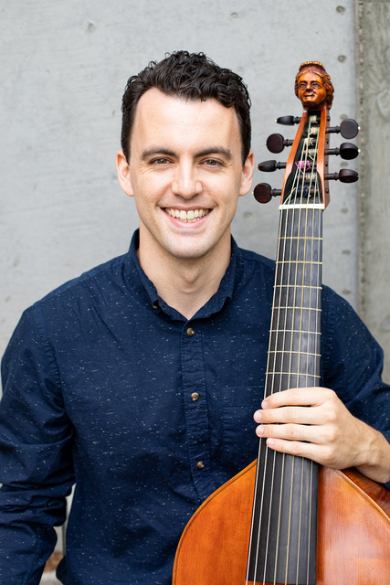
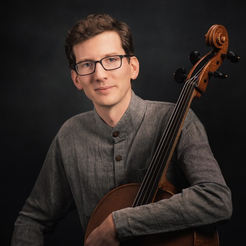
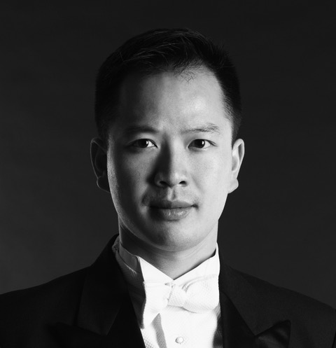

David H. Miller is a musicologist and a performer, and an Assistant Professor of Practice at the University of California, Berkeley, where he teaches in the Department of Music and the American Studies program and serves as director of the University Baroque Ensemble. On Baroque double bass, viola da gamba, and violone, David has appeared with groups such as the Handel and Haydn Society, Voices of Music, Arcadia Players, Trinity Wall Street, New York Baroque Incorporated, Albany Consort, and Seven Times Salt. He holds a Ph.D. in musicology from Cornell University, and his research has been featured in the Journal of the American Musicological Society, the Journal of Musicology, the Indiana Theory Review, and Twentieth-Century Music, among several other publications. David writes on issues surrounding the performance and reception of modernist music and early music in the twentieth century, with a special focus on the music of Anton Webern.

Frédéric Rosselet has a deep interest in both early and new music, finding inspiration in uncovering modern and contemporary works while exploring historical repertoire on period instruments. As a cellist, he has appeared at major festivals and with leading ensembles, including the Verbier Festival (Switzerland), Yellow Barn (Vermont), Philharmonia Baroque Orchestra, and American Bach Soloists. His recent projects have centered on late French baroque music for the viola da gamba. Originally from Switzerland, Frédéric studied at the Lausanne Conservatory, the Basel Music Academy, and the Schola Cantorum Basiliensis before completing his Doctor of Musical Arts at the University of Southern California. He is grateful to have had many inspiring mentors, including Ralph Kirshbaum, William Skeen, Rafael Rosenfeld, and Marc Jaermann.

Praised not only for his "deft" conducting (San Francisco Chronicle) but also as a "a master of [the harpsichord]" (San Francisco Classical Voice) and "the fortepianist of the beguiling fingers” (Bloomington Herald-Times), Derek Tam appears regularly throughout the Bay Area and beyond as a conductor and historical keyboardist. He is the executive & artistic director of the San Francisco Early Music Society, a major advocate for early music in the United States, and serves as the artistic director of the biennial Berkeley Festival & Exhibition, an internationally-renowned celebration of early music. Tam is the most recent past president of the board of Early Music America, a national organization dedicated to strengthening historical performance.